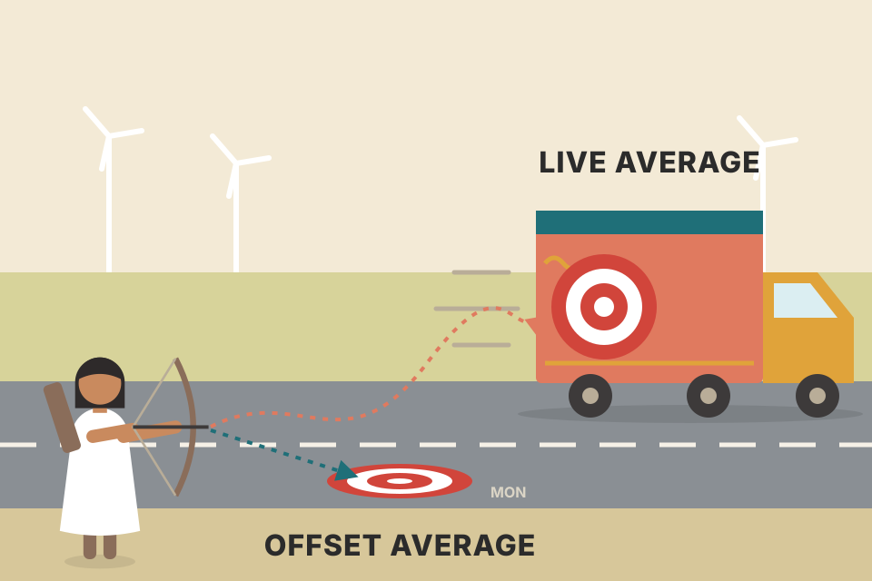
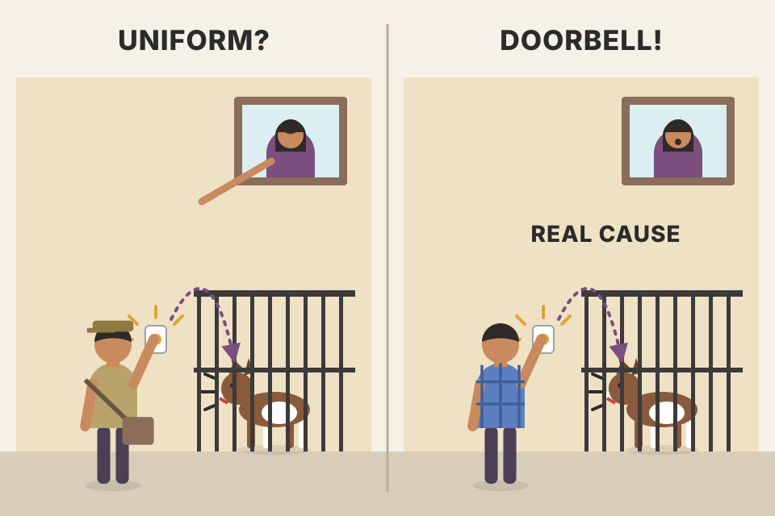
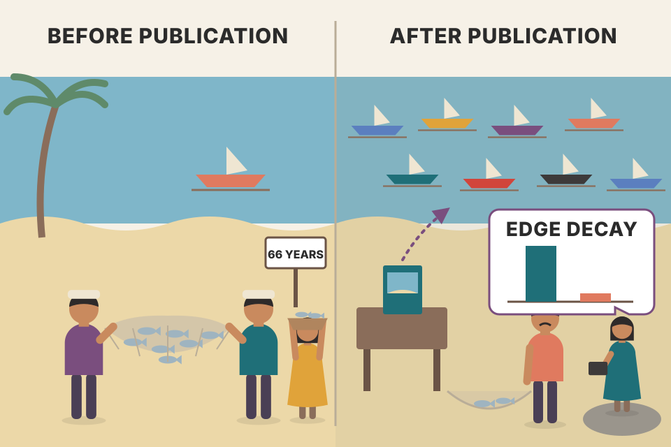
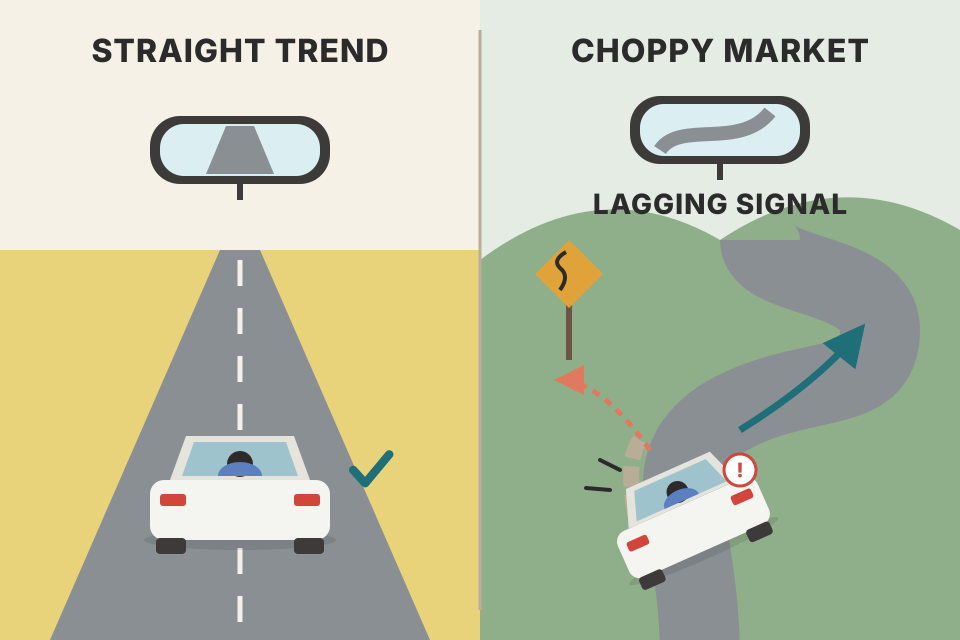

Traders repeat three ideas about moving averages: they are support and resistance, they define the trend, and their crossovers predict what comes next. Grimes puts each idea through a plain statistical test on thousands of stocks, futures and currencies. This page follows the chapter in order: every test, every rule, every table's message, and the one place where moving averages really did help. All prices on this page are simulated (made by code to show one idea), so they are never evidence about real markets. The book's own numbers are shown as the book gives them and are labelled that way.
The chapter is one long experiment. It starts with a trap in how moving-average charts are drawn, then tests the "support" claim three ways, finds an edge, and shows that the edge has nothing to do with the average. It then tests crossovers and trend indicators, and ends with the one use that survives.
"Statistics are used much like a drunk uses a lamppost; for support, not illumination." (Vin Scully, the chapter's epigraph)
Grimes has already used moving averages for a few specific jobs earlier in the book. Here he looks hard at how price actually behaves around them. What surprises him is how often the same claims are repeated by traders, books and the media without anyone testing them:
Testing is awkward because many traders use averages in ways you can't test. Sometimes the average is one part of a bigger method with many judgment calls. Sometimes the thinking is just sloppy: "the average sometimes acts as support", "a crossover is sometimes a good trend signal". You can always find a chart where something worked, and traders give too much attention to a few outstanding examples. The real questions are: does it repeat reliably over a large sample, and does it add predictive value to your trading?
His parable: flip a coin at every trading decision. Sometimes the coin will seem to help. After many trades you will remember a few dramatic cases where it made you money: it got you out of a loser early, or kept you in a big trend. You might decide that it doesn't work all the time, but nothing in trading does, so you'll keep it and "use it sometimes", or say you "have to know when to look at it", which is exactly what many traders say about their indicators. It's a joke with a serious point: you have to be sure your tools are better than random chance.
Give a coin to a hundred traders. By luck, a handful will have a great year. Each of them will have a story about the coin's brilliant call. The stories are true; the coin is still a coin.
Each line is one simulated trader on a simulated random-walk market (no edge exists by construction). Every 5 days the coin says long or short. The bright line is the luckiest trader of the twelve. The readout pools 400 coin traders, so you can see that the luckiest ones are what chance alone produces.
With no edge, each trader's total return is a sum of random wins and losses. The spread of totals grows like √(number of trades), so a large group of traders always contains some big winners and some big losers. Looking only at the winners (or only at the memorable trades) is selection bias. The cure is the one Grimes uses all chapter: count every signal and compare the average result to what the market does anyway.
A moving average averages a window of prices; the window slides forward one bar and is recalculated each bar. A standard 50-period average is the mean of the last 50 closes, including the current bar's close. The current bar hasn't closed yet, so until it does the platform uses the current price in its place.
That has an important consequence: the average for the current bar changes with every tick while the bar is forming. For a long average, today's price is one of several hundred, so it takes a very large move today to shift the line much. For short averages (some traders use 3 to 5 bars), the last price can move the line a lot. And so the average you see on a historical chart did not exist in that form in real time.
A class average where one student's mark keeps changing until the bell. In a class of 200 it hardly matters. In a class of 3, that one student drags the average all over the place.
(This algebra is not in the book.) Today's average is (sum of the previous N−1 closes + today's price) ÷ N. If today's price moves by Δ, the average moves by Δ ÷ N. So a 2% move moves a 3-bar average by about 0.67% of price, but a 200-bar average by only 0.01%. Drag the length slider down to 3 and watch the last point of the line jump as you move "today's" price.
Some writers (Grimes names Kirkpatrick, 2006) say moving averages work as support and resistance. Part of this belief may come from casually looking at old charts. But some of the most dramatic "tests" of an average never actually happened, because the average moves while the bar is forming.
His Figure 14.1 is a daily SPY (S&P 500) chart where price seems to drop to its 20-period average almost to the tick, then explode to close at the high of the day. It looks as if a trader buying at the average would have bought the exact low, at a structurally important point, with a shot at a 13% advance over the next few months.
Figure 14.2 replays that day at five moments. At the open the average was well below the day's low. When price fell to the session low (108.94), the average was still below it. As price rallied in the afternoon the average rose too, but stayed under the low. Only as the market surged into the close was the average pulled up to touch the low, which had been set hours earlier. (The five averages printed in the figure climb from about 108.88 to 108.96.) A trader acting on this "signal" would have had to buy the close, not the low. It was an illusion; the trade never happened. Any backtest built on price touching a moving average, including some tests in this chapter, suffers from this effect.
A finish line that walks toward the runner. The runner stopped short of it hours ago; at the end of the day the line walked over to where the runner's footprint was, and the photo shows them touching.
This replay uses made-up prices shaped like the book's example (a 20-period average, a low of 108.94, a strong close), not SPY data. Step through the day: the yellow live average stays below the low until the last minutes.
(This shortcut is not in the book.) Price meets the live average only when price = (S + price) ÷ N, where S is the sum of the previous N−1 closes. Solve it and you get price = S ÷ (N−1): the average of the previous N−1 closes. That fixed level, not the line on the chart, is what price had to reach in real time. Here it is 108.86, below the 108.94 low, so the touch was impossible. On the finished chart the plotted average is that level plus (close − level) ÷ N, so a big up-close lifts the line into the bar. That's why the illusion shows up on strong reversal days, the very bars that look most convincing.
backtest_results_summary.md runs): a rule that fills "at the moving average" on the same bar the average is computed from has this look-ahead built in.One fix is to offset the average by some bars: use yesterday's average (calculated on yesterday's close) as today's, or even the value from 5 to 10 bars ago. The offset line is known before the current bar begins. Whether it hurts or helps depends on what you use the average for.
There are other variations too: averages that weight recent prices more than old ones, and averages that don't drop old data but let it fade away exponentially (EMA). Grimes notes that an earlier chapter of the book studies simple (SMA) and exponential (EMA) averages in detail from a discretionary trader's view; that chapter is not one of this PDF's modules (see Murphy Ch.9 on this site for the SMA/EMA/WMA mechanics). This chapter sticks to the hard facts of price behaviour around simple moving averages.

The live average is a target painted on a moving truck. The offset average is the same target painted on the road yesterday: a bit behind, but it stays where it is.
(The counting rule is not in the book; it applies the section 03 shortcut.) A bar "touches" the live average on the finished chart when the plotted value sits inside the bar's high–low range. It touched it in real time only if the average of the previous N−1 closes sits inside that range. Red dots mark phantom touches: on the chart, but never reachable live. The offset average never has phantoms, because its value was fixed before the bar opened. Shorter averages make more phantoms, since today's price carries a weight of 1/N.
Grimes doesn't test complete systems or complex methods. He only asks whether there is any visible, non-random price movement around moving averages. The questions:
Treat these as tests of the basic building blocks. Other conditions, not covered here, might show an edge when combined with averages, and there may be profitable ways to trade them outside these tests. He starts at the beginning: what happens when price touches a simple moving average?
Before testing a car you test the bricks it's built from. If one brick is made of sand, no clever design built on it will save the car.
This is an event study (Grimes' Pythia procedure, described in Ch.12). It separates the entry from the exit: instead of a P&L that mixes both, you see the average path of price after the signal, day by day, compared to the market's normal drift. If a signal has no edge, its average path looks like the baseline and the excess hovers around zero.
When price meets an average there are only two outcomes: the level holds on the close (price traded down to the average but the bar closed above it) or it fails (the bar closes below). This test covers the first case. (His Figure 14.3 shows valid examples on a 20-period EMA: buys where an uptrend dips into the line and closes back above it, sells where a downtrend pokes up into it and closes back below.)
The test runs in the Pythia framework: take the rule, flag every bar that fits, then build a composite return for each day after the signal. Grimes stresses this is not a tradable signal; it's a clean test of tendencies. It's even possible he has buy and sell backwards, and that's fine: a backwards rule simply shows buys with negative excess returns and sells with positive ones.
Many traders watch the 50-day average "because hedge funds watch it" or because many traders like to buy there. If people really used this level, there should be non-random price behaviour around it. How to read his tables (used all chapter):
What Table 14.1 (50-period SMA) showed. There is statistically significant activity, but not the expected kind. Futures and forex show slightly positive but insignificant numbers for buys. Equities show a consistently negative return after buying bounces off the 50-period average: −5.1 bp at day 1 rising to −62.9 bp by day 20, mostly at the 0.01 level. What looked like a buy is a significant sell in stocks; the rule was mis-specified. Forex shows a slight edge on the sell side (means and medians both consistently negative). Equity sells show no clear edge because means and medians point different ways. Whatever the details, it is not what we'd see if the story about the 50-day were true. Grimes adds that with enough extra conditions (patterns, distance from the average, market conditions) you could massage the data into a positive edge, but that isn't the point; and simple answers are rare in market data.
A trampoline test: drop a ball onto the line a thousand times and measure how high it bounces on average, compared to balls dropped anywhere. If the line is a real trampoline, its balls bounce higher. In stocks, the 50-day's balls bounced lower.
40 simulated markets × 1,200 bars, with the SMA length from the slider above. On the random walk, no edge exists, so any stars are false alarms (expect about 1 in 20 cells at the 0.05 level, more because the day-10 to day-20 windows overlap). The second market has a reversal effect built in by construction; it shows what a real edge looks like in this table, not that markets have one.
The excess return asks: "after this signal, did price do better than it does on an ordinary day?" Subtracting the baseline matters because stocks drift up; a raw +10 bp after a buy means nothing if every day averages +10 bp. %Up near 50% can hide a lot: a signal can win slightly more often yet lose more on average, which is why Grimes leads with the mean.
Two cautions for reading any table like this. First, the 10-, 15- and 20-day returns of nearby signals overlap, so they aren't independent; simple t-tests then overstate significance. Second, with 8 horizons × 6 columns = 48 cells per table, a few stars appear by chance alone. Grimes' answer is the next section: compare against other lengths and a random length.
backtest_results_summary.md): it buys a dip to the 20-week EMA, but only after a weekly close above last week's high and inside a 50/200-week uptrend. That's a different, more conditioned rule than touch-and-hold, so this table neither confirms nor kills it.Two boxes in Table 14.1 looked unusual: equity buys and forex sells. Is that because the 50 is special? If institutions watch the 50-period average, they aren't watching the 45. (If that logic fails, it gets silly: eventually every average is significant, and every possible price is crossed by some average.) Figure 14.4 shows the 45 and 50 together: they are very similar, with the 45 hugging price a bit more closely because it responds faster.
Table 14.2 (45-period) looks almost the same as Table 14.1, which strongly contradicts the idea that the 50 is special. A blunt test wouldn't be expected to find a dramatic edge, but a truly important average should at least be distinguishable from other lengths. Grimes says you get similar tables whatever length you test.
So he builds a strange average (Figure 14.5): its length random-walks between 30 and 70. On every bar the length goes up 1, down 1 or stays the same, chosen by a pseudo-random number generator, so the line is different every time the chart is recalculated. Table 14.3 shows the touch-and-hold results for this random average. For equities, the 45 and 50 are literally indistinguishable from a random level: equity buys still show significant negatives (−7.2 bp day 1, −61.4 bp day 20), much like −62.9 for the 50 and −64.8 for the 45.
If a famous restaurant is truly special, its reviews should differ from the place next door and from a random diner. If all three get the same scores, the fame is in the name, not the food.
This is a placebo test. The random-length average has no meaning that anyone could watch, so whatever it shows is what "an average-like line near price" produces by itself. When the famous line matches the placebo, the effect comes from the shape of the test (price dipping to a nearby smoothed level), not from the specific number 50.
What about the 200-day? It has been important in the investment literature for decades, at least since Joseph Granville wrote about it in the 1940s. For many casual chart readers it's the ultimate line in the sand. Supposedly many funds may only own stocks above their 200-day averages, and the media print stories whenever an index crosses it. Surely such a watched level is significant?
Table 14.4 says the numbers speak for themselves. Equity buys on a touch-and-hold of the 200-day show significant negative excess returns, larger than for the 50: −13.3 bp on day 1, −57.5 at day 10, −97.4 by day 20. Equity sells are also negative (−62.4 bp by day 20), so the "sell" side actually works as a sell while the "buy" side also behaves like a sell. Futures and forex show nothing consistent.
A wall everyone talks about. When you test it, balls that hit it don't bounce back; they keep sinking a little faster than balls that never touched it.
A 200-day average is far from price most of the time, so touches are rare (see the readout: far fewer signals per 1,000 bars than a 50). Fewer events means each number in the table is noisier. That the equity numbers are still large and significant tells you the effect is strong, but it's negative, the opposite of support.
If averages were important levels and big traders made decisions on them, a break of the average should cause a reaction: traders exit or adjust positions, and that buying or selling should distort returns. Grimes calls this the Moving Average Penetration test.
This rule always fades (trades against) a move through the average: price breaks below after being above, and the rule buys. It might be backwards (maybe these should be traded as breakouts, with the move), but again it doesn't matter: a backwards rule shows negative excess for buys and positive for sells. Figure 14.6 shows examples of both.
Tables 14.5 (50-period) and 14.6 (200-period). Interesting, at least for equities. The sells (shorting the first bar that closes above the average) show a consistent, significant negative edge: for the 50, −12.6 bp at day 1 to −40.2 bp at day 20; for the 200, −16.2 bp to −91.7 bp. The buys (buying the first close below the average) show a small positive edge at first (for the 200: +9.4 bp on days 1 and 2) that decays into a significant negative edge somewhere between days 5 and 10. Could one outlier cause that decay? The data isn't shown, but when the equities are split into large-, mid- and small-cap groups, the same decay appears in every slice; a single odd stock would most likely affect only one. Futures and forex show no predictable pattern. This is the strongest clue so far that not all assets trade the same way, which challenges the claim that every technical tool works in any market and time frame without adaptation.
A fence everyone says matters. When the cows push through it, you'd expect a stampede one way or the other. In stocks, they wander back a little. In futures and currencies, they don't care at all.
For the sell rule, the bar must close above the average after the previous bar's high was below it: the bar is a strong up day. Selling it and seeing price fall afterwards is a bet that strong up days partly give back their gains. Hold that thought: it's the clue that unlocks the next section.
Grimes ran the penetration test on many other versions (lengths from 10 to 200, simple and exponential, and the random-length average) and they all look similar: the odd distortion in equity returns persists. There's no evidence that averages are important levels; 20, 45, 50, 65, 150, 185, 200, 233 and any others all look basically the same. Yet the penetration test does show a significant edge in equities: buy closes below and short closes above the average. His radical thought: repeat the test without the moving average.
Why that makes sense: for a buy, the bar must close below the average while the previous bar's low was above it. In almost every case that means today's close is below yesterday's low. In rare cases the average could rise above yesterday's low, but that's unlikely. So he tests the simpler rule directly: fade a close outside the previous day's range (buy a close below yesterday's low, Fig 14.7; short a close above yesterday's high, Fig 14.8).
Table 14.7. For the first five days the results look remarkably like the moving-average breaks. Equities: a fairly large, significant negative return after the sell condition (−8.9 bp day 1 to −48.0 bp day 20), and a smaller but still significant positive return after the buy condition (+9.1 bp day 1, +20.7 bp day 5, still +12.4 bp at day 20, every horizon at the 0.01 level). Not conclusive, but it strongly suggests the "moving average edge" is simply stocks' tendency to reverse after a close outside the previous day's range. That's mean reversion, one of the verifiable, fundamental features of price movement.
It matters on another level too: equities don't follow a random walk. Random-walk markets wouldn't show this; when he reran the test on random-walk data, deviations from the baseline were generally under 2 bp. One simple rule, on his sample of 600 stocks over the past 10 years, gives enough evidence to reject the random walk hypothesis for equities.
Futures and forex are more complicated. There is a measurable difference in the share of up closes on day 1: futures close up 50.6% of the time at baseline vs 52.6% after buys and 47.9% after sells; forex 51.0% vs 54.2% and 47.5%. These differences are significant and might give a head start combined with other factors, but the size of the move is far too small to matter economically on its own. A pattern repeats through his tests: futures and forex look more like random walks than equities do.
Why not rewrite the academic books? Three answers. One: the effect is small even in stocks; he puts it at 29 bp for buys and 24 bp for sells five days after the signal. Would you run a system that holds a $100 asset for a week to make $0.25? Some traders could capture an edge that small, but he doesn't plan to trade these ideas systematically; they are hints about where opportunities and hidden market structure might be. Two: you could say the sample isn't representative; he disagrees (stocks of all sizes and industries plus most major futures and currencies) but calls it a fair criticism. Three: this isn't a standard, accepted test for a random walk, even though the results strongly suggest a non-random process.

You thought the dog barked at the postman's uniform. Then you sent the postman without the uniform, and the dog barked just the same. It was the doorbell all along.
Each bar is the day-5 excess return (bp) of the penetration rule on 30 pooled simulated markets; the thin line on each bar is ±2 standard errors. The reversal market has mean reversion built in by construction, so it shows the pattern of Grimes' result (every length gives the same answer, and the no-average rule gives it too). It is not evidence that real stocks revert; his table is.
When two signals fire on almost the same bars, they must have almost the same results. The readout shows that nearly every penetration signal is also a close outside yesterday's range, so the average adds almost nothing. The average is a costume; the real event is a strong close beyond the prior bar, and in stocks such closes tend to be partly given back over the next days.
Grimes' own example: 25 bp on a $100 stock is $0.25 per share for a week's hold. (Not in the book:) on NSE delivery trades, your breakeven_move_fyers.md note puts the round-trip break-even at about 0.27–0.33% (27–33 bp) for ₹1L–₹10L trades, before tax. So a 20–29 bp gross edge is about the size of the costs; it's only usable as a nudge inside a bigger idea, which is exactly how Grimes frames it.
A crossover happens when a short average (which tracks price closely) crosses above or below a longer one. These events are widely seen as trading signals or trend indicators, because they are supposed to mark turning points. In their purest form they are traded always-in: long on a buy signal, and on a sell signal immediately reverse to short, with no flat period. The idea is that being always in lets you catch a big trend when it comes.
Figure 14.9 (EURUSD, 10/50-day) shows an excellent trade caught almost in full. Crossovers will always capture most of a large trend. There's lag that depends on the lengths, so they never sell the exact high or buy the exact low, but in backtests they always take a big chunk out of a large trend.
That's half the story. Crossover systems always do well in trending markets and just as surely get destroyed in ranges: with no clear trend, the market chops back and forth and forces the system to buy highs and sell lows. These whipsaws usually give back all the profit from the trends, and sometimes more. Contrary to what some books say, basic moving average systems are not economically viable on their own; whipsaws and trading frictions make them breakeven at best. Figure 14.10 (USDJPY, 10/50-day) shows a range where the system repeatedly buys the high and sells the low, with significant losses.
A smoke detector that never misses a real fire but also goes off every time you make toast. In a burning building it's a hero. In a kitchen it costs you a fortune in false alarms.
A crossover only fires after price has already moved far enough to drag the fast average across the slow one. In a trend the move keeps going, so being late costs little. In a range the move reverses about when the signal fires, so every signal enters near the edge of the range and exits near the other edge: a loss plus costs, every time. The system's result is the battle between a few big trend wins and many small range losses, and the cost slider tips that battle.
backtest_results_summary.md): "not worth trading anywhere"; fast timeframes lost to costs, and weekly results were below just holding the stocks. MACD is the gap between two EMAs, so it's the same family.There's a large body of academic work on crossover rules. Brock, Lakonishok and LeBaron's landmark paper, "Simple Technical Trading Rules and the Stochastic Properties of Stock Returns" (1992), was one of the first to show that technical rules could make statistically significant profits on stock market averages. They tested moving-average crossovers and channel breakouts on the Dow Jones Industrial Average from its first day of records in 1897 to the last trading day of 1986, and found significant profits on both the long and short side for every average combination they tried.
Their lengths may surprise modern traders: short averages of 1, 2 or 5 periods and long ones of 50, 150 or 200. A 1-period average is just the price, so many of their "crossovers" were really price crossing an average. Most system builders today use lengths much closer together, like 10/50 or 50/200. Grimes calls the paper accessible to lay readers and required reading for anyone who trades technical signals.
Their most profitable rules weren't stop-and-reverse; they entered on a crossover and exited 10 days later. Some tests also put a band around the averages and ignored signals inside it, to cut noise and whipsaws. Grimes re-creates the simplest one, the 1/50 crossover with no band, trading $100,000 on each signal (or shorting the same dollar amount), every day from 1920 to 1986 (Figure 14.11). The equity curve rises steadily through the 1929 crash, both World Wars and several recessions with no significant drawdowns, and stays stable for most of a century while the world changed. That stability is exactly what systematic traders want.
Table 14.8 (1920–1986, no costs or financing): 911 trades, total net profit $743,794, 28.0% profitable, mean trade 84 bp, mean winner 589 bp, mean loser −112 bp. Win rates well under 40% are normal for long-term trend following; it works as long as winners are much bigger than losers. But is 84 bp enough after frictions? This is a backtest on the cash DJIA, an average of 30 stocks; for most of this history you'd have had to buy each stock and rebalance the basket yourself. Financing costs, dividends and taxes also matter. Financing alone: earning 4% risk-free for 66 years (the rate varied, but this is roughly right; he cites Dimson, Marsh and Staunton 2002) turns $100,000 into over $1.3 million. And the DJIA itself rose 2,403% over the period; per Grimes, buy-and-hold would have returned over $2.3 million, though with large swings and drawdowns.
The stronger blow is an out-of-sample check. The published results end in 1986, so walk forward from 1 Jan 1987 to 31 Dec 2010, as if you'd started trading it after publication. (Not a true out-of-sample test, since the authors probably looked at some later data even if they didn't publish it.) Table 14.9 (1987–2010): 449 trades, total net profit $19,830, 20.9% profitable, mean trade 7 bp, mean winner 477 bp, mean loser −117 bp. Buy-and-hold made over $550,000 in the same period.
Is this just normal variation? The equity curve has no other flat, choppy 15-year stretch, but that's not a test. A Kolmogorov-Smirnov test (a non-parametric test of whether two samples come from the same distribution) on the in-sample vs out-of-sample returns gives p = 0.007: enough evidence to reject "same distribution". Something changed, and it may be unwise to trade the system after such a shift. Nothing was wrong with the research; market history is full of ideas that stopped working, especially after they were published in academic or practitioner literature.

A fishing spot that fed a village for 66 years. Then a book is written about it. The next 24 years, the nets come up nearly empty, and a statistician confirms the catch now looks like it comes from a different lake.
Expectancy per trade = win rate × average win + loss rate × average loss.
The win rate fell from 28.0% to 20.9% and the average winner shrank from 589 to 477 bp, while losers stayed about the same size. That is enough to take expectancy from 84 bp to almost nothing. Slide the cost below: even 10 bp per round trip makes the later period lose money.
Two simulated trade lists (911 and 449 trades), drawn from simple distributions matched to the book's summary numbers. They are not the real trades, so the p-value here won't equal 0.007. At 0% decay both lists come from the same distribution; at 100% the second matches the 1987–2010 stats.
(KS mechanics are not in the book.) Sort each sample and draw its cumulative curve: the share of trades at or below each return. The KS statistic D is the biggest vertical gap between the two curves. Bigger samples make a given gap less likely by chance, so the p-value depends on D and both sample sizes. It needs no assumption about the shape of the distribution, which suits fat-tailed trade returns.
The usual explanations for edges that fade after publication are crowding (more people trade the rule, so prices adjust earlier), changing market structure (index futures and ETFs made the "basket" tradeable and arbitraged), and plain data-mining in the original sample. Grimes doesn't pick one; he just shows the distribution changed.
breakeven_move_fyers.md: delivery break-even of roughly 27–33 bp per round trip is several times the 7 bp mean trade of 1987–2010.Optimization (sometimes wrongly called "curve fitting") means changing a system's inputs until you find settings that would have done well on past data. For the crossover above, a 65-period short and 170-period long average would have made the system profitable over 1986–2010: $169,209 from just 35 trades, with a 40% win rate. Those numbers came from an exhaustive search over many pairs. Had he also searched the inverse system (shorting when the faster average crosses above the slower, and vice versa), he could have found pairs that made well over $1 million in the same period. The danger: the best historical settings are rarely the best in walk-forward testing or live trading. At worst, an optimized system looks incredible on history and is worthless in real trading.
Over-optimization can be accidental or deliberate. Some system designers lack the training to avoid the trap and are honestly surprised when live results don't match. More often, Grimes says, it's a deliberate way to take money from the public: build and optimize a system in a weekend, show dramatic results on a handful of markets, sell a few copies at $2,000–$3,000.
It can also be subtle; you can over-optimize your own simple market study without noticing. But the word "over" implies a right amount, and some optimization is necessary and part of learning. Example: studying gap openings, what gap size? Start at 400% and you may find no gap that big in your whole universe. Try 0.25% and gaps are so common they mean nothing. Eventually you might settle on 5–20%. Each step risks over-specifying the question, but that's also how you learn how the market moves.
His guidelines against over-optimization:
It's a deep subject. For automated system designers, walk-forward re-optimization, optimizing for goals other than maximum net profit, and viewing optimization results as multi-dimensional surfaces are all important. Most discretionary traders use studies only as a starting point, so knowing the main dangers is enough. When in doubt, ignore a study you suspect is over-optimized: better to know you don't know than to be misled.
Shoot an arrow into a barn wall, then paint the bullseye around it. Every arrow is a perfect hit. The test is whether the next arrow, shot before the painting, hits the same spot.
The market here is a pure random walk with no drift, so every crossover pair has a true expected return of zero. Searching 56 pairs (112 with the inverse) and keeping the best is picking the maximum of many noisy numbers, which is always well above zero. The second half of the data, which the search never saw, shows the true value: on average about zero (minus costs). Allowing the inverse system doubles the search and pushes the in-sample best higher still, just as Grimes' $1 million inverse result suggests.
backtest_results_summary.md) already pick parameters on earlier data and judge them on later data, and prefer setups where all settings were profitable out-of-sample (weekly pullback: "all 8 parameter settings profitable"). That's Grimes' guideline in action.It's well established that crossovers can't be traded as stand-alone systems, so Grimes doesn't pile up more studies confirming it. A more common use is as a trend indicator: many methods say that in an uptrend the up swings are bigger than the down swings, so identify the trend with an average and trade only in its direction. A useful trend indicator should make long trades work better when it says "up" and short trades work better when it says "down".
The method. Label every day up, down or neutral by the indicator, then compare the mean return, volatility and chance of an up close in each group. One small but critical adjustment: each day's return must be assigned to the previous day's label. If a big up day turns the indicator up and you count that day as an "uptrend" day, you're assuming you were already long from yesterday's close, which needs knowledge of the future.
Indicator 1: slope of a 50-period average. Any length could flip the trend on almost any bar, so the choice is arbitrary; he sticks to the common 50. Measuring "slope" by eye is easy; to make it exact he fits a linear regression line through the last five points of the average (equal weights) and uses its slope. Table 14.10 reports excess return (raw return of the group minus the raw return of all bars; "All" excludes neutral days), the standard deviation of raw returns, the mean 20-day historical volatility, and %Up.
Why? Put a 50-period average on a chart and it seems to catch every big trend and keep you in for the whole move, and then some. That's the catch: lag. Any derived indicator (averages, trendlines, regression lines, extrapolations) can only react to changes in momentum after they happen. A slope indicator also gets whipsawed when the market is flat and the slope flips back and forth. A band around the average filters some noise, but makes good signals even later. Figure 14.13 (US Dollar Index, 50-period) shows it: trading it would have been slightly profitable on that chart, but nearly a third of the chart had to be retraced before the slope turned down, and after the November bottom a large rally came before it turned up. Lag plus the market's habit of sharp reversals at tops and bottoms greatly reduces its value.
Indicator 2: stacked averages. Use three averages; uptrend when shortest > medium > longest, downtrend when reversed, undefined otherwise (for example when the medium is above the long but the short sits between them). Like all crossovers it looks great because the eye goes to the big winners, but whipsaws erase the profits in most markets, leaving no measurable edge; and more averages usually add more lag with no improvement over a simple crossover. A popular version uses 10-, 20- and 50-period simple averages, mostly by stock traders. Table 14.11: in equities the tool flags the wrong side: downtrend +166.9, uptrend −157.9, so stocks tended to go down when it said up and up when it said down. Futures may have an edge, especially on the short side (downtrend −203.0, uptrend +80.7). Forex (+43.6 and +43.9) looks more random than the random data (−74.9 / +98.6). Traders relying on this tool, or ones derived from it, face a headwind.

Steering a car by looking only in the rear-view mirror. On a long straight motorway it works fine. At every bend you turn late, and on a twisting road the mirror tells you to turn left just as the road goes right.
The slope of a five-point regression line is (−2y₀ − y₁ + y₃ + 2y₄) ÷ 10 on the last five values of the average (that formula is not in the book; it's what an equal-weight five-point regression reduces to). Because the average is smoothed and the slope uses five of its points, it turns several days after price does. In a market that reverts in the short term, "uptrend" days are often days after a strong run, which is just when reversion pushes prices down. So lag plus mean reversion puts the indicator on the wrong side, as Grimes found in stocks. Tick the look-ahead box to see the other trap: counting the day's own return under the label that day created makes even a random walk look like it has a trend edge.
Two things in the source to read carefully. The text describes the equity numbers as "over 3 percent" positive and "well over 1%" negative, while the table prints 177.2 and (129.6) labelled bp; the table's time horizon for "excess return" isn't stated. And the Random column shows a trend-like split (−85.2 / +72.0 and −74.9 / +98.6) that Grimes reports but doesn't explain. This page quotes the table values as printed.
backtest_results_summary.md). That's longer-term and combined with an entry rule, not the daily 50-slope label Grimes tested; still, it's worth checking whether the filter or the entry carries the edge.One use of averages does look good for long-term investors. Grimes compares two simple approaches on the daily Dow Jones Industrial Average from 1 Jan 1960 to 31 Dec 2010:
The filter earns almost as much while invested only two-thirds of the time, with a higher mean and lower daily volatility. Coefficient of variation: 46.0 for buy-and-hold vs 24.3 for the filter, a clear case of better risk-adjusted performance from a simple technical rule. Grimes asks how many money managers realise they could beat the market this simply, and how much in fees investors could have saved in the often futile chase for higher returns with lower risk.
Lower is better: the filter delivers each basis point of average return with about half as much daily wobble.
Swimming only when the sea is calm. You miss a few good swims, but you also miss nearly every storm, and the storms come mostly when the tide is going out.
Simulated markets with a small upward drift. The slider adds a "leverage effect" (volatility jumps more after down days than after up days; it's a GJR-GARCH model, not in the book). Set it to 0 and the filter loses its volatility advantage; that is the mechanism Grimes names.
Grimes' explanation: declining markets are more volatile than rising ones. The power isn't in the 200-day; the system works with nearly any length. Being below a long average is just a cheap sign that the market is in a decline, and declines come with the wildest days. Stepping aside removes many of the biggest daily swings, so the standard deviation drops a lot while the return drops only a little.
backtest_results_summary.md): the 200-day market filter was "the one consistent winner" (+0.26 Sharpe, −8 points drawdown out-of-sample on average), and your plan keeps it on every long strategy. Grimes' result is the same effect on the DJIA.murphy_moving_averages.md claim-vs-test table already links the 40-week/200-day line to that filter.The answers weren't crystal clear: some tests showed interesting, significant tendencies. But the same tendencies appear whatever length you test, even when the length changes randomly each bar, and often even with no average at all. That strongly contradicts the claim that any one average is significant or special. Traders rely on averages because they are lines on the chart that sometimes seem to hold price, but that's a trick of the eye. Treating the 50-, 10- or 100-day as support or resistance is trading a concept with no statistical validity.
The chapter also taught useful things about markets:
The message: know your tools. Understand the statistical tendencies around them and how they work in the market. There is no substitute for careful thought and analysis.
| Claim | Test | Verdict in Grimes' data |
|---|---|---|
| MAs are support/resistance | Touch & hold: 50, 45, random, 200 | No; equity "buys" were significant sells, every length alike |
| The 50 or 200 is special | Compare lengths + random length | No; indistinguishable |
| Breaking an MA matters | Penetration, then the no-MA version | Edge in stocks, but it's mean reversion after a close outside yesterday's range |
| Crossovers make money | Brock et al. 1/50, walked forward | Worked to 1986, near zero 1987–2010 (KS p = 0.007) |
| MAs define the trend | 50-slope and 10/20/50 labels | Wrong side in stocks; maybe some use in futures |
| The 200-day protects investors | Long only above it, DJIA 1960–2010 | Yes for risk: CV 24.3 vs 46.0, via volatility, not the line |
The moving average is a useful ruler for measuring where price has been. This chapter shows it is not a wall, not a crystal ball and not a compass, but it can be a storm warning.
The average for the current bar includes the current price, so it rose as the market rallied. When the low (108.94) printed, the live average was below it; only the strong close dragged it up into the low, hours later. In real time the level price had to reach was the average of the previous 19 closes, which was below the low. A trader could only have bought the close. (Section 03)
You must subtract the baseline: what an average 5-day period returns anyway. Stocks drift upward, so +10 bp might be exactly normal. The excess (µsig − µb) and its significance are what count; %Up must also be compared with the baseline (50.07% for equities). (Sections 05–06)
It lost relative to baseline: significantly negative excess returns, about −5 bp on day 1 and −63 bp by day 20. The supposed buy behaved like a sell. (Section 06, Table 14.1)
If the 50 were special because people watch it, it should look different from a 45 that nobody watches and from a placebo whose length random-walks between 30 and 70. All three gave nearly the same results, so the 50 isn't special. (Section 07)
If yesterday's low was above the average and today closes below the average, today's close is almost always below yesterday's low too; the only exception is when the average itself jumps above yesterday's low in one bar, which is rare. So the two rules fire on nearly the same bars and must show nearly the same results. (Section 10)
Fading closes outside the prior day's range gives significant excess returns in 600 stocks over 10 years, while random-walk data shows deviations under about 2 bp, so he rejects the random walk for equities. But the effect is small (around 24–29 bp at 5 days, $0.25 on a $100 stock), the sample might be challenged as unrepresentative, and it's not a standard random-walk test. (Section 10)
They always catch most of a big trend, but in ranges they buy highs and sell lows. The whipsaw losses plus costs usually give back the trend profits, leaving them breakeven at best as stand-alone systems. (Section 11)
0.209 × 477 − 0.791 × 117 ≈ 99.7 − 92.5 ≈ +7 bp per trade. Subtract 10 bp of round-trip cost and it's about −3 bp: a losing system. (Section 12)
If both periods' trade returns came from the same distribution, a difference this large would happen only about 0.7% of the time. So reject "same distribution": the system's behaviour changed. It doesn't say why (publication, market structure, or luck in the original sample). (Section 12)
It's the best of many tries on the same data (selection of a lucky maximum); 35 trades is a small sample; the best historical settings are rarely best going forward; and searching the inverse system too could "find" over $1M, which shows how much the search itself can produce. (Section 13)
You can only act on a label after it's known, at the close. If a big up day flips the indicator to "up" and that same day counts as an uptrend day, the test assumes you were long before the move, which is look-ahead. It makes even random data look trend-predictive. (Section 14)
Both lag: they flip only after a move has happened, and stocks tend to mean-revert after strong moves. So "uptrend" labels often come right before pullbacks and "downtrend" labels right before bounces. Grimes' tables show positive excess in equity downtrends and negative in uptrends. (Section 14)
From the fact that declining markets are more volatile. Being below a long average flags declines, so stepping aside removes many of the most volatile days. Grimes notes it works with nearly any length; the 200 isn't magic. (Section 15)